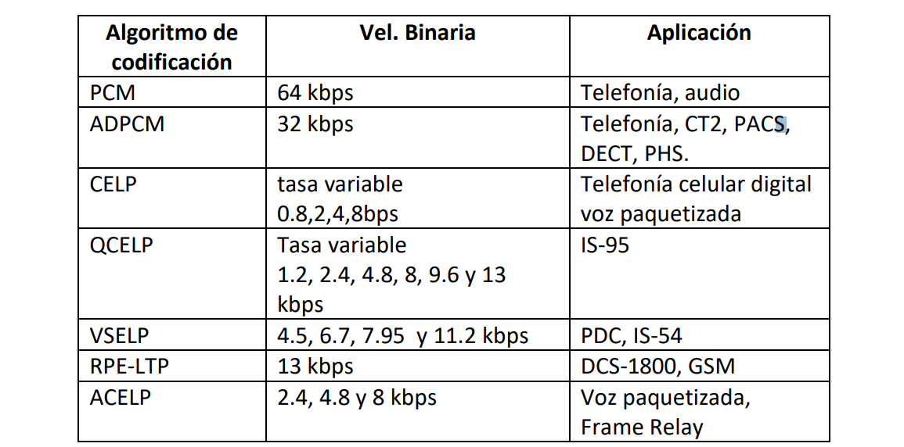

- La voz se digitaliza mediante alguna técnica de codificación de voz en la misma estación móvil
- Ancho de banda amplio y utilización del espectro más eficiente.
- Mayor seguridad mediante métodos de encriptación y autentificación.
- Principales problemas: Velocidad de transmisión limitada por el retardo del canal
- Uso de métodos de acceso como TDMA y CDMA
 Archivos y Software
Archivos y Software
CAPITULO 5: TELEFONÍA CELULAR DIGITAL
TELEFONÍA CELULAR DIGITAL
Codificadores de voz

Vocoders
- Diseñadas especialmente para la transmisión de la voz a tasas menores de 20 kbps
- Un vocoder consiste en un analizador situado en el transmisor que extrae de la señal de voz un conjunto de parámetros que representan al modelo que produce la voz
- En el receptor se encuentra un sintetizador que utiliza los parámetros recibidos y con ellos produce una seña de voz reconstruida
VOCODER LPC (Codificación Lineal Predictiva)
- Permite optimizar la transmisión de datos.
- Se utiliza para análisis y resíntesis del habla
- Las compañías telefónicas lo utilizan como una forma de compresión de voz, como en el estándar GSM Codificación predictiva lineal
- También se utiliza para redes inalámbricas seguras, donde la voz debe digitalizarse, cifrarse y enviarse a través de un canal de voz estrecho
- Permite la codificación de la señal de voz a 2400 bps
- Determina 10 coeficientes de predicción lineal para cada trama de 20mseg
Codificación CELP (Code Excitated Linear Prediction)
Caracteristicas
- CELP se basa en procedimientos de búsqueda de análisis por síntesis, cuantificación de vectores con pesos (VQ) y predicción lineal (LP).
- Se usa un filtro LPC de décimo orden para modelar las formantes de retardo corto de la señal de voz.
- La periodicidad de retardo largo de la señal se modela con un diccionario adaptativo VQ (también llamado pitch).
- El error de la predicción lineal de retardo corto y el pitch VQ se cuantifican usando un libro de secuencias estocásticas (son muestras de ruido aleatorio blanco gaussiano).
- Al receptor sólo se le envía como excitación el índice del diccionario y la ganancia.
Codificador VSELP
Caracteristicas
- Utilizado en IS-136 (IS-54) que codifica a 7.95 kbps
- Además, utiliza un adicional de 5.050 bps para control de errores y sincronización de tramas
- Análisis de LPC de orden 10
- Predicción de largo plazo
- Búsqueda en el adaptive codebook (pitch)
- Búsqueda de la primera base de vectores en el codebook
- Búsqueda de la segunda base de vectores en el codebook
- Cuantización vectorial del codebook de la ganancia [3]
IS-136
IS-136 es una evolución de la IS-54 estándar. IS-136 a menudo también se conoce como TDMA
Fue originalmente un importante móvil de radiocomunicaciones de la norma en el continente americano, pero entretanto ha sido sustituido por el de GSM/GPRS y CDMA2000 technologies.
- Ranuras de tiempo por Canal 6
- Los usuarios por Canal: 3 (full rate), 6 (mitad de precio), 9 (futuro)
- Modulación Digital: Pi/4 DQPSK, de Nyquist factor de Filtro = 0.35
- Analógico: FM
- Estructura de datos: TDMA
- La Codificación de voz: VSELP (suma de vectores emocionado lineal predictiva) 8 kbps
- Modulación Velocidad de Datos: 24,300 símbolos por segundo (1 símbolo = 2 bits)
- Los Estándares EIA/TIA: ES-136.1 y ES-136.2 del sistema
- IS-137 para las estaciones móviles
- IS-138 para las estaciones base
- IS-136 ha digitales (DCCH) y analógica (ACC) canales de control.
- La ACC controles de las transmisiones analógicas y garantiza la compatibilidad con sistemas tales como AMPLIFICADORES y ES-54B.
- El DCCH controles de las transmisiones digitales y permite que las características especiales del is-136.
- Una estación móvil (teléfono celular) en un ACC tiene un modo de inactividad. Durante este estado, el móvil, espera a que los mensajes de la estación base, o puede originar una llamada.
- Un móvil en un DCCH tiene un estado similar, llamado camping. Se refieren a las Operaciones de las transacciones que pueden ser procesadas durante el ralentí y el camping de los estados.
- Consiste en dos bandas de frecuencias separadas, pero adyacentes una con la otra, A y B (824 - 894 MHz)
- Cada banda tiene 416 pares de frecuencias (pares de portadoras) ó 416 canales, 30 KHz cada portadora (25MHz/30kHz = 833, 833/2 = 416)
- Cada par de frecuencias tiene una separación de 45 MHz entre Tx/Rx, lo cual permite la operación duplex
- De los 416 canales, 21 son de control y se utilizan para el envío de las señales necesarias (monitoreo y señalización) para el establecimiento de las llamadas
- De los 416 canales, 395 son de voz. Si fuera necesario se pueden utilizar 21 de estos canales como de control.
- En la radio base se utiliza un transceptor por canal.
Trama TDMA en IS-54
- R: Ramp time
- DATA: Información de usuario o FACCH
- SYNC: Synchronitation and training RSVD: Reserved
- SACCH: Slow Asociated Control Channel
- CDVCC: Coded Digital Verification Color
- Code (Equivalente al SAT en AMPS)
GSM
Sistema Global de Comunicaciones Móviles. Conocido como 2G debido a que supuso un salto de las comunicaciones analógicas a las digitales.
En Europa se utiliza el espectro radioeléctrico de 900 y 1800 MHZ, mientras que en Estados Unidos la banda es la de 1900. Esto hace que no todos los móviles GSM puedan funcionar en todo el mundo, a no ser que su tecnología esté preparada para conectarse a todas las bandas.
HISTORIA
- 1982: CEPT comienza el desarrollo de GSM (Groupe Spéciale Mobile)
- 1989: Se forma el ETSI y GSM se convierte en un comité técnico
- 1990: Las especificaciones de GSM en la banda de 900 MHz también son aplicadas al sistema
- Digital Cellular System en la banda de 1800 MHz (DCS-1800)
- 1991: Las Recomendaciones de GSM se encuentran muy avanzadas
- 1992: Lanzamiento comercial de GSM en Europa (God Has Sent Mobiles)
- 1993: GSM cuenta con 62 miembros en 39 países en todo el mundo. Además 32 miembros más potenciales en otros 19 países
- 1993: GSM cuenta con cerca de un millón de usuarios, el 80% de ellos en Alemania
- 1993: Primeros servicios comerciales fuera de Europa: Australia, Hong Kong, Nueva Zelanda.
- 1993: GSM cuenta con redes operando en Dinamarca, Finlandia, Francia, Grecia, Irlanda, Italia, Luxemburgo, Noruega, Portugal, Suecia, Suiza y UK.
- 1994: Otros países con planes para GSM: Andorra, Austria, Bélgica, Brunei, Camerún, Cipre, Estonia, Islandia, Irán, Kuwait, Latvia, Malasia, Holanda, Pakistán, Qatar, Singapur, Sudáfrica, España, Siria, Tailandia, Turquía, Emiratos Arabes, entre otros.
TIPOS DE CANALES
SIM (Subscriber Identity Module)
- La tarjeta SIM o Subscriber Identity Module es una pequeña tarjeta de plástico que tiene un chip pegado a ella
- En este chip, almacena de manera segura tu número de teléfono, así como las claves de acceso de un usuario concreto en una operadora de telefonía
IMSI - International Mobile Subscriber Identity
- Es el identificador de la línea o servicio.
- Este número sirve para enrutar las llamadas.
- Las operadoras miran este número y de ahí pueden obtener el país o la red a la que pertenece.
- MCC: Código del país (3 dígitos)
- MNC: Código de la red móvil (2 o 3 dígitos)
- MSIN: Número de 9 o 10 dígitos como máximo que contiene la identificación de la estación móvil (MS o Mobile Station)
Bandas de Frecuencia en GSM
Normas de las redes celulares
IS- 95
- El estándar IS-95 CDMA es un sistema de tercera generación de acceso múltiple por división de código y que utiliza las técnicas de espectro ensanchado
- Tiene la particularidad de expandir las señales que son transportados, con códigos Pseudo aleatorios, a esta técnica también se le conoce como el espectro ensanchado DSS
- Los sistemas CDMA, dividen el espectro de frecuencia en canales o portadoras de 1.25 Mhz, cada uno de los cuales soporta múltiples canales de código de usuarios
Características
- Privacidad: Debido al código las transmisiones no son fácilmente interceptadas.
- Atenuación del canal: En caso de tener una zona de distorsión o atenuación en un medio, el usuario no se perjudica como en otra técnica de acceso múltiple, ya que solo parte de la información está siendo enviada por está frecuencia porque es compartida por todos. q
- Rechazo a la interferencia intencional: Al tener un ancho de banda menor al necesario para transmitir un símbolo, el sistema salta a un ancho de banda de frecuencia más alta que el de la señal.
- Flexibilidad: Para realizar la comunicación no es necesaria la sincronización entre grupos de usuarios, solamente entre el transmisor y el receptor.
- 824MHz a los 894MHz
- 1850 Mhz A 1990 Mhz
CANALES CDMA
Codificación: Forward Channel
Traffic Channel
Distribución del Espectro radioeléctrico en Ecuador
Bandas Asignadas en el Ecuador

Comparación entre sistemas
BIBLIOGRAFÍA
- A. A. Huurdeman, The Worldwide History of Telecommunications., John Wiley & Sons.
- J. B. Nica, «Slideshare,» 2016. [En línea]. Available: https://es.slideshare.net/nica2009/lecture-7-probabilidad-de-error-de-transmisin-pcm-formateo-de-seales-dpcm-adpcm.
- F. Torreon, «ulpg,» [En línea]. Available: https://www2.ulpgc.es/hege/almacen/download/23/23210/teoriavocoderlpc.pdf.
- M. Bonilla. [En línea]. Available: http://www.tpartner.net/2015/11/26/telefonia-analogica-vs-digital-vs-ip-que-tecnologia-elegir-para-la-empresa/.
- D. Gómez, «researchgate,» [En línea]. Available: https://www.researchgate.net/publication/272508453_Parametrizaciones_robustas_de_
Reconocimiento_Automatico_de - G. Rodriguez, 2010. [En línea]. Available: http://www.spw.cl/05mar07_mobile/Material_moviles/amps.pdf.
- J. Bustos, «Estudio de Sistemas de compresión de voz digital orientado a telefonía celular,» 2002.
- M. K. W. M. W. O. Siegmund M. Redl, An Introduction to GSM, Artech House, 1995.
-
Telefonica Celular Digital

-
Codificadores de Voz
-
Velocidad de Codificacion y Aplicaciones
-
Vocoders
-
Vocoder LPC
-
LPC-10
-
Codificacion CELP
-
Codificador VSELP
-
IS-136
-
Características
-
Canales de Control
-
Arquitectura IS-136
-
Espectro utilizado en IS-136
-
IS-136 en las bandas de 850 y 1900 MHz
-
Trama TDMA en IS-54
-
GSM
-
Historia
-
Arquitectura de GSM
-
Tipos de Canales
-
Tarjeta SIM
-
IMSI
-
Bandas de Frecuencias en GSM
-
Normas de las Redes Celulares
-
IS-95
-
Características
-
Canales CDMA
-
Codificación: Forward Channe
-
Traffic Channel
-
Distribución del Espectro radioeléctrico en Ecuador
-
Bandas Asignadas en el Ecuador
-
Comparación entre sistemas
-
BIBLIOGRAFÍA